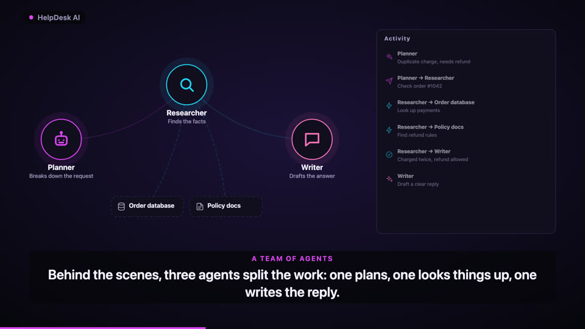
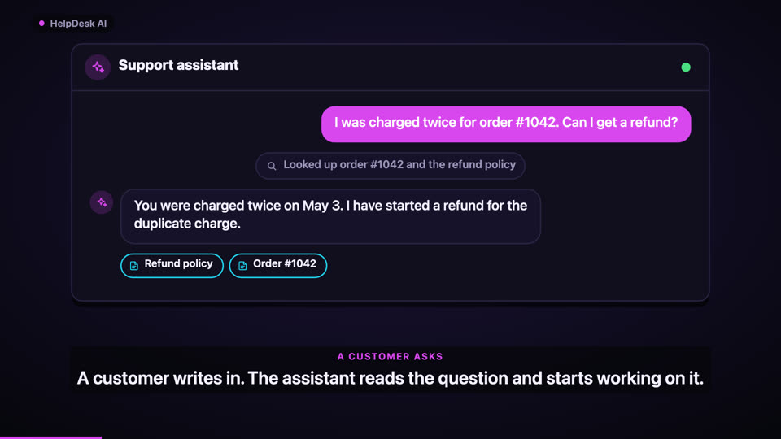
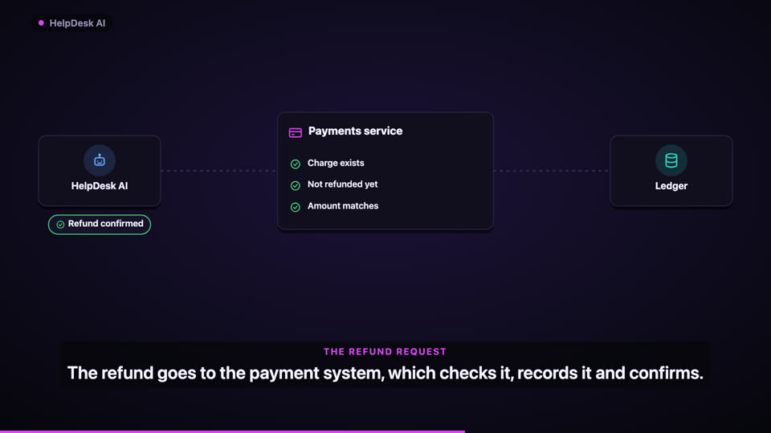
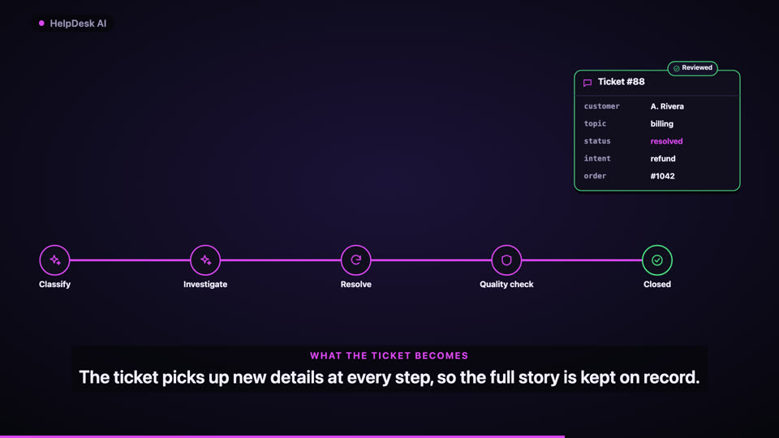
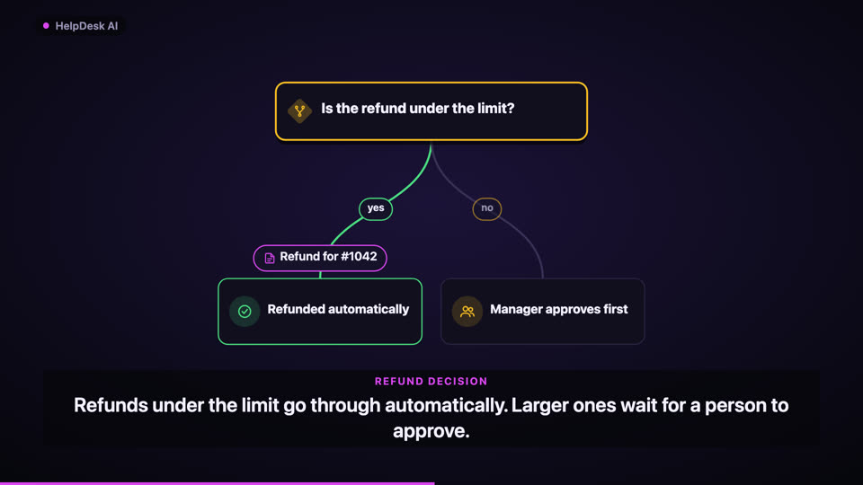
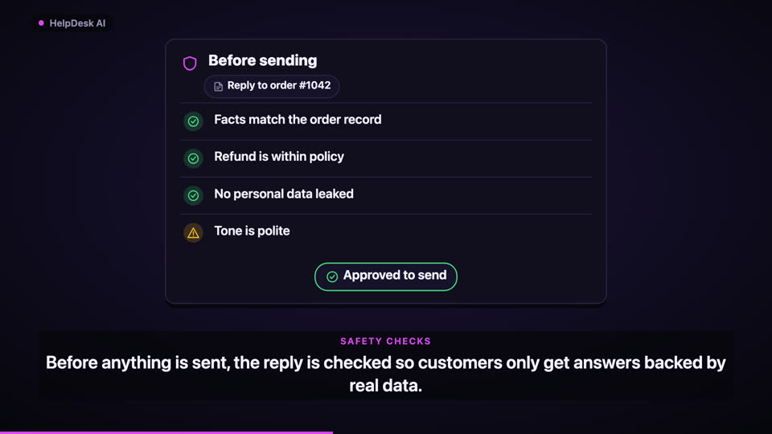
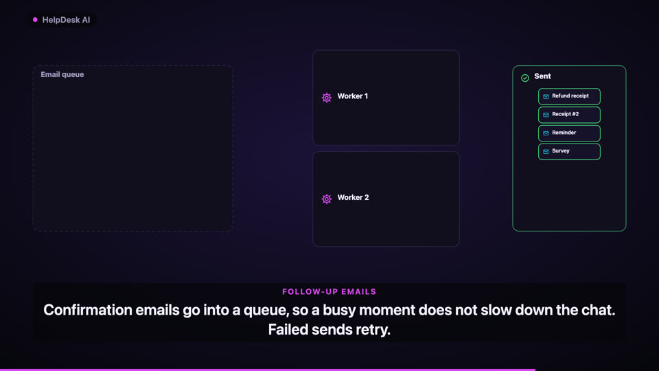
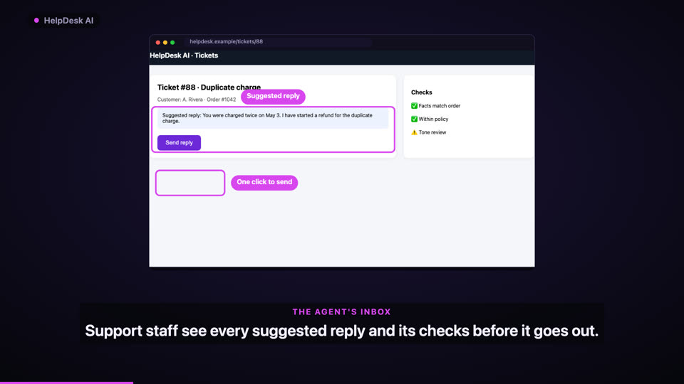
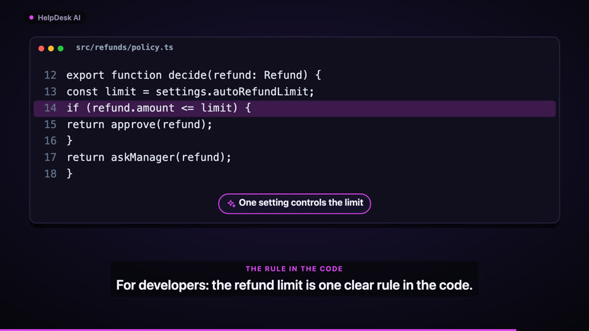

Your codebase,
explained in one video.
A free Claude Code plugin that reads your code with a code graph, checks every claim against it, and animates how it really works: agents at work, chats answering, requests being checked, data changing. In your brand, with music, ready for LinkedIn.
Install in Claude Code
/plugin marketplace add faizankhan789/codebase-flow-video /plugin install codebase-flow-video@codebase-flow-video
Not a flowchart
Each scene is picked from what your code actually does. Every element comes from a verified map of the code.









How it works
Accuracy first, then story, then motion.
Graph the codeTree-sitter indexes 11 languages. Claude asks “who calls this?” instead of reading whole files, so big repos stay cheap.
Map every step
FLOW.md lists every pipeline, step and branch with file:line and the exact code.Check every claimA script confirms each file, line and quote; a fresh reviewer agent checks what they mean.
Animate the storyPlain-language scenes in your brand style, original music, 16:9, 1:1 and 9:16, plus a post to share.
Looks like your product
It reads your brand colours and fonts from Tailwind, CSS, theme files, Android, Flutter or iOS, and picks a style that fits your domain.
midnight anything
neural AI & agents
ledger fintech
storefront e-commerce
clinic healthcare
terminal dev tools
boardroom enterprise
ocean data
candy playful
daylight light
Built not to make things up
The video can only be as accurate as the map, and the map can only claim what the code shows.
- Every step and branch cites
file:lineand the exact code; a script rejects anything that does not match. - Every branch in the code is shown, or listed as deliberately left out, with a reason.
- “Instantly”, “secure”, “always” and other claims are flagged unless the code proves them.
- Suspected bugs found while tracing are reported, not animated away.